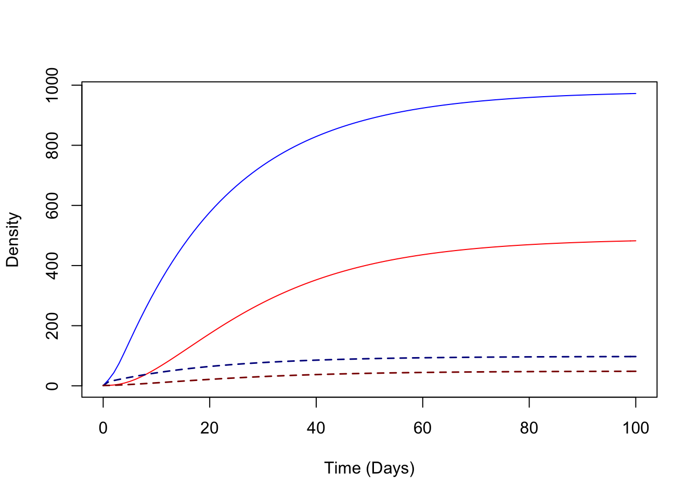

2.2 Solutions
What does a solution to these equations look like?
Solutions to these equations are values of the variables over time \(\left( M(t), Y(t), Z(t), X(t) \right)\) that satisfy the system of four equations described above. We call these solutions orbits. To put it another way, if we took the derivatives of the orbits for any variable at any point in time using the basic definition \[\lim_{h\rightarrow 0} \frac{x(t+h)-x(t)}{h},\] and then we used the values of the orbits at time \(t\) to compute \(dM/dt\), \(dY/dt\), \(dZ/dt\), and \(dX/dt\) (i.e., using the formulas on the previous page), they would be the same.
It is important that these orbits are unique: after specifying the initial values of these variables, there is one and only one set of orbits that solves the equations. When we solve the equations, we tend to produce orbits forward in time, but the orbits are defined for all time – \(i.e.\) the process implies the existence of solutions far back into the past. These are deterministic equations, after all.
As written, the equations do not define a model, though it is an easy mistake to make (and one we’ll probably make repeatedly when we can get away with it). Instead, the equations define a process or a model family. A model is something that can produce orbits, and we can’t possibly produce orbits until we assign specific values to the parameters.
To find solutions of equations we use an R software package called deSolve. Because of the delay for the EIP, these are called delay differential equations, which are handled using a function called dede. An important part of these delay differential is that the values of variables at a time lag are retreived using a function called lagvalue().
A very important part of solving a delay differential equation is that we must specify the initial conditions for an interval of time, not just at a point. (Since the equation for \(dZ/dt\) looks back \(\tau\) units, we must specify values of \(M(t)\), \(Y(t)\), and \(X(t)\) for all values of \(t \in (-\tau, 0)\).) This forces an awkward choice, since we would need to know the solutions back in time to use them. What is typically done – and we’ve done it here – is to specify a constant set of initial values. Doing this introduces a little numerical slop. These values are not what we would get if we ran the equations backwards in time. We’re happy to acknowledge this little problem and find ways around it, but we should never forget it is there.
2.2.1 Derivatives
With deSolve, solving differential equations is not difficult. The first step is to write down the equations to compute the derivatives. (Many users will find that reading this code is like learning how to compute \(\sqrt{2}\). If so, feel free to skip it.)
The solver expects a function with three required arguments (in this order):
tis timeyis the list of variablesparamsis a set of parameters
The derivatives are computed and returned in the same order as ‘y’ in a list. To make code that is easy to read, we make params as a list with parameter names (see below), so that inside the function with(params,{...}), the parameter names are visible.
dAronMay = function(t, y, params){with(params,{
# Variables
if(t<=tau) ylag<-y0 else ylag <- lagvalue(t-tau)
M=y[1]; M_tau = ylag[1]
Y=y[2]; Y_tau = ylag[2];
Z=y[3];
X=y[4]; X_tau = ylag[4]
# Terms
kappa = c*X/H; kappa_tau = c*X_tau/H
h = b*f*q*Z/H
# Dynamics
dM = Lambda(t) - g*M
dY = f*q*kappa*(M-Y) -g*Y
dZ = f*q*kappa_tau*(M_tau-Y_tau)*exp(-g*tau) -g*Z
dX = h*(H-X)-r*X
return(list(c(dM, dY, dZ, dX)))
})} 2.2.2 Initial Values
To run the model, we must supply initial values. A useful convention for simple models is to pass the initial values as a named list. Later, we can turn the outputs into a data frame, and then we can retrieve the variables by name. If you’re writing code yourself, remember that the initial values and the return value for the derivatives must occur in the same order.
y0= c(M=60, Y=0, Z=0, X=1)2.2.3 Parameter Values
We pass the parameters as a list. It might seem like overkill, but we have written a function that takes default values and generates the list. This makes it easy to generate a new set of parameter values with alternative values, and it also helps us to write and pass function \(\Lambda(t)\) with parameters we like. By passing the parameter as a list, the parameter values are available to the function dAronMay when we use with(params, {}).
Note that we have also attached the initial values of the variables as a parameter set, which are the return values for lagvalue(t) when t<0.
makeParams = function(y0,
g=1/12, f=1/2.5, q=0.95,
c=0.15,
b=0.55, r=1/200, H=1000,
m=.05, ss=1,
tau=10
){
ss = min(1,max(0, ss))
return(list(y0=y0,g=g,f=f,q=q,c=c,H=H,tau=tau,b=b,r=r,
Lambda = function(t){m*H*(1 + ss*sin(2*pi*t/365))}))
}
params = makeParams(y0)To make it absolutely clear, we are assuming:
\(g=1/12\): mosquitoes live about \(12\) days, on average
\(f=1/2.5\): mosquitoes feed every 2.5 days, on average
\(q=0.95\): the human fraction is 95%; mosquitoes feed on humans 95% of the time
\(c=0.15\): about 15% of bites on infectious humans infect a mosquito
\(b=0.55\): about 55% of bites by infective mosquitoes cause an infection
\(r=1/200\): human infections last about \(200\) days, on average
\(H=1000\): we’re simulating transmission in a population of a thousand humans
\(\tau=10\): the extrinsic incubation period is about 10 days
For emergence, we tune the average value using \(m\) and it is scaled to \(H\):
The parameter \(m\) in the function above has been set to \(0.05\) by default.
The parameter \(ss\) affects the amplitude of the fluctuations. We force it to take on values between 0 and 1.
Emergence is modeled as a sinusoidal function with a yearly cycle.
\[\Lambda(t) = m H \left(1 + \sin \left(\frac{2\pi t}{365}\right)\right)\]
2.2.4 Solving
This code solves the equations:
require(deSolve)
tt = seq(0,5*365, by=5)
yout <- dede(y=y0, times=tt, func=dAronMay, parms=params) 2.2.5 Visualizing
We write a function so that we can plot things easily:
plotTS_AronMay = function(yout){with(data.frame(yout),{
par(mfrow = c(2,1))
plot(time/365, M, type = "l", col = "blue",
xlab = "Time (in Years)",
ylab = "Mosquito Density",
main = "Mosquitoes")
lines(time/365, Y, col = "purple")
lines(time/365, Z, col = "red")
plot(time/365, X, ylim = c(0,1000), type = "l",
xlab = "Time (in Years)",
ylab = "# Infected Humans",
main = "Humans")
})}This code plots the outputs:
plotTS_AronMay(yout)